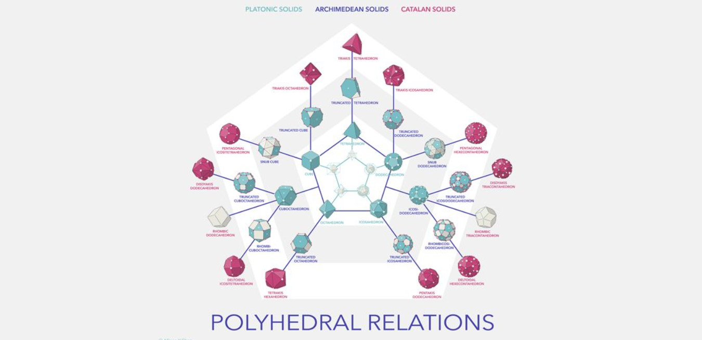
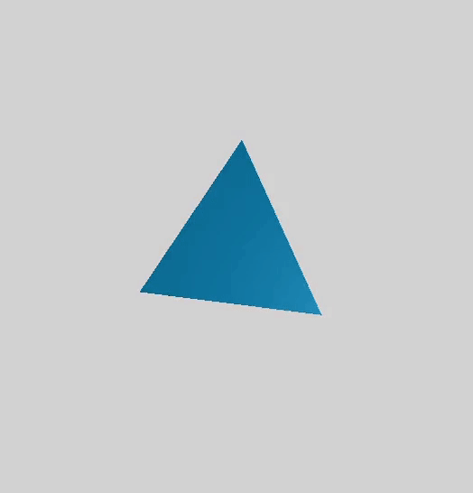
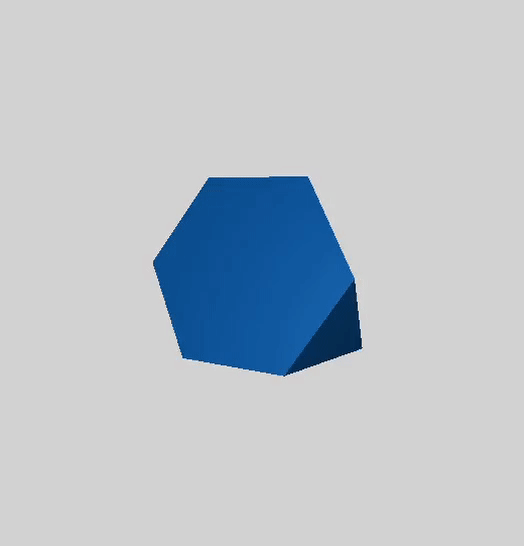
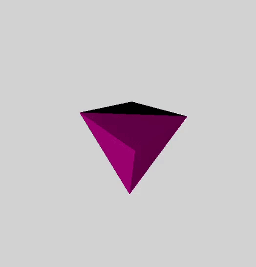

An interactive solid visualizer. The main page is an image map with links to interactive models of the Platonic solids, the Archimedean solids and the Catalan solids. Most functionalities have been implemented with the help of three.js. Models were built using Blender 2.93.
The inspiration for this project was the amazing artwork by Allison Chen which I first came accross as a
teenager somewhere around 2015. I rememember thinking how cool would it be if there was an interactive version
where people could click and move the solids at will. I had at the time however no experience with programming whatsoever
and so this idea had to wait some good five years to finally see the light of day.

It ended up being easier than I imagined. All functionalities are already built within three.js itself, after building
the scene and setting up adequate lighting, the only relevant command that needs to be defined is
const controls = new OrbitControls(camera, renderer.domElement );
which gets updated further down inside the animate( ) function. The models built in Blender are then
free to be zoomed at, moved or rotated at will.



All platonic, archimedean and Catalan solids have been included together with a brief description of their main properties
on the sidebar. The gifs on the top show the tetrahedron, the truncated tetrahedron, and its dual,
the triakis tetrahedron. It serves as a nice example
to illustrate how the Archimedean solids are built from the truncation
of the platonic solids and how the Catalan solids in turn are simply the duals of the Archimedean ones, which
one can build via the Dorman Luke construction.
Sadly, the artwork did not include the Kepler-Poinsot polyhedra, as these are particular
stellations of the dodecahedron and icosahedron.